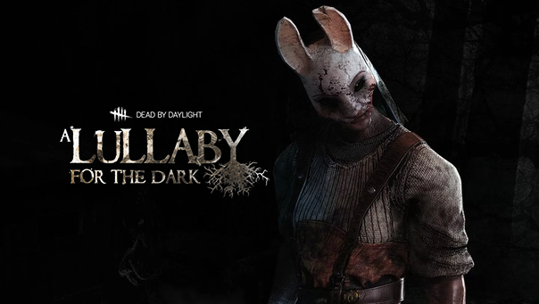

Глава 5:
A Lullaby For The Dark


Единственный ребенок в богатой семье, Дэвид Кинг как будто был рожден для великих свершений. Пока он рос в Манчестере, его потенциал и в спорте, и в учебе был крайне высок, а благодаря семейным связям ему были открыты все двери. Он мог добиться успеха на любом поприще, если бы не его бунтарская натура. Дэвид просто жить не мог без притока адреналина, который давала хорошая драка, поэтому постоянно искал причины врезать кому-нибудь.
Как только Анна научилась ходить, мать начала обучать ее выживанию в глухом северном лесу. Проживание в таком далеком от цивилизации месте требует от тебя устойчивости и умения. Когда солнечный свет угасал, и делать что-либо снаружи становилось невозможным, они укрывались в доме, - ладно сбитой избушке, способной выдержать даже самую свирепую зиму. В тепле очага и материнских рук, Анна играла с деревянными игрушками и масками, сделанными мамой. Она засыпала под звуки сказок и колыбельных, ее посещали только светлые и добрые сны. Она еще не знала, что скоро все изменится.


Особая способность:
Этому навыку обучила её мать, а природа лишь отточила мастерство. Охотница может бросать Топоры с убийственной точностью.
Вы начинаете матч с 5-ю Топорами
Для максимальной скорости полета Топора до конца заряжайте бросок.
Пополняйте запасы Топоров в Шкафчиках
Персонажи
Дэвид Кинг
Читать дальше...
Личные навыки:


Охотница
Читать дальше...


Особая способность:
"Охотничьи топоры"
Вы начинаете матч с 5-ю Топорами
Для максимальной скорости полета Топора до конца заряжайте бросок.
Пополняйте запасы Топоров в Шкафчиках
Dead By Daylight
Контакты:
Помощь:
предложения отправлят сюда
@mail: dbd-help@mail.ru
D
E
A
D
E
A
D
B
Y
Y
D
A
Y
L
I
G
H
T
A
Y
L
I
G
H
T